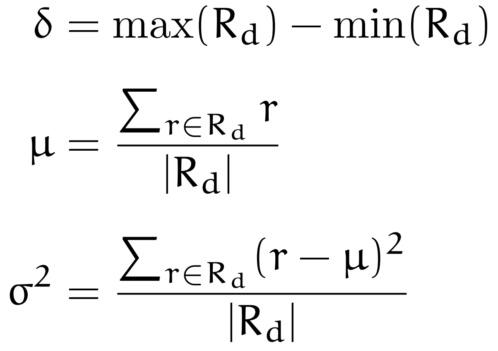

Several plots which explore different aspect of a user's IMDb ratings.
There are for example plots which analyse your favourite directors or show statistics comparing different
countries.
Upload your own data, you can export your ratings from IMDb as "ratings.csv" or load sample data.
Content
Title Type Statistics
Imdb classifies its items into different title types like movie, tv movie and
video,
which refer to films shown in cimena, those produced for television and those which are release
direct-to-dvd respectively.
This chart visualizes which categories your rated items come from.
Your Favourite Directors
Which are your favourite directors?
This chart lists the top ten directors according to their score. Alternatively directors can be sorted
by the number of their films which you have rated or the average rating you gave their films.
For all diagrams in this chapter, directors with only asingle rating are excluded, therefore only
directors with at least two rated film are considered for the ranking.
The score for a director d is computed in the following way, where a =
is your average rating and Rd denotes
all of your ratings for films by director d:
sort directors by their
How did your favourite directors develop over time?
The next visualizes the development of directors by plotting your ratings for their films
over time given in years. Includes the directors with most rated films.
Different directors can be selected and deselected by clicking on their name in the legend.
Which directors do you feel most ambiguous about?
This chart orders directors by the variance σ2 of their film's rating. It additionally shows
the average rating μ and the difference δ between the best and worst rating.

On which directors do you disagree with IMDb?
Lists the directors where your average ratings differ most from IMDb's average ratings for these
directors.
Shows both overrated and underrated directors.
Genres
Genre
rating
title
director
year
Decade Comparision
Do you prefer older or newer films?
This chart shows the number of ratings for films from different decades as well as the average rating
per decade.
Which decades do you rate higher or lower than IMDb?
This chart shows how your average ratings for different decades differ from IMDb's average ratings for
these decades.
Correlation between Runtime and Rating
Do you prefer longer or shorter films?
This plot sets a films runtime in minutes in relation to its rating.
Ratings Habits
How do your rating habis change over time?
This plot shows the average number of films rated per year as well as the average rating of films rated in one year.
Comparision of Countries
Which countries produce the films you watch?
This pie chart breaks down the number of ratings for film produced in different countries.
Coproductions are handled as their own category, internally further split into those where the country
is the main producer and those where it is one of the minor producers.
The country which IMDb lists first is counted as the main producer.
Which countries tend cooperate to produce films?
The next diagram lists the countries with the most ratings including corpoductions. Films produced by a
single country and corpoductions are listed seperately.
Which countries produce the best or the worst films?
This chart orders countries according to their average rating. Coproductions count fully for all
envolved countries and only countries with at least three rated films including coproductions are
considered.